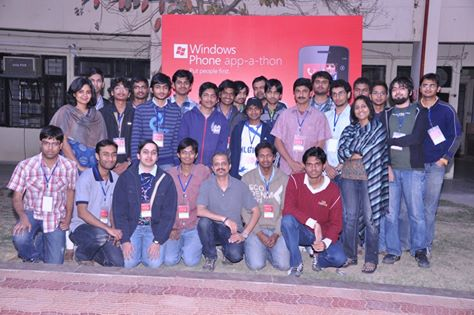

Ultrasonic Acoustics In Smartphones
Ultrasonics in smartphones essentially refers to utilizing the speaker and the microphone to deal with sound frequencies inaudible to humans (usually > 20 KHz). This project involves a feasibility study followed by a proof of concept to approximately find the distance between two smartphones without using any hardware other than what is already present in today's mobiles.
Two methods were implemented, one uses a radio signal (packet on Wi-Fi Direct) and an audio pulse sent concurrently from one mobile and estimating the time difference of arrival (TDOA) of these two signals at the other mobile taking advantage of the inherent speed difference between an electromagnetic and a sound wave. The other method is a sound-only algorithm involving two way communication between the smartphones called Beep-Beep developed by Microsoft Research. This was demonstrated to be feasible at inaudible frequencies without causing any disturbance to the users, thus demonstrating the practicality.
This project was carried out under the esteemed guidance of Dr. Vinay Ribeiro , Department of Computer Science, IIT Delhi and was externally funded by Cambridge Silicon Radio
Emotion Classification from EEG Signals
This is an exciting project with the aim of predicting the human emotions from EEG Signals. Imagine a world where everyone is wearing a hat which shows different colors to indicate their emotions. Creepy. No?. This project was carried out under the guidance of Dr.Jayadeva as part of the Neural Networks Course.
We've implemented several SVM, MCM and neural network based techniques to classify emotions. The dataset consisted of people's EEG signals captured while they were watching 1 minute video clips followed by the answers they've given to a questionnaire which serves as ground truth. Wavelet packet transform was used to extract spectral features in different time-frequency bins. This resulted in a dataset where the number of features is around 100 times the number of data points. We’ve tried all standard feature selection approaches including FCBF, Information Gain, DEFS, ReliefF etc. and trained SVMs using the selected features. But the problem with this approach is that each feature selection algorithm only throws light on certain part of the hyperplane and so, the selected features from a single algorithm cannot completely explain the whole dataset resulting in lower accuracies.
So we tried combining these algorithms using a two layer SVM approach where each SVM in the first layer considers only certain features selected by one algorithm and the output of all these SVMs acts as input to the second layer. This was very effective and after changing the classifier to MCM, the accuracies were comparable to the state-of-the-art.
The link to the project, report and code repository is here.
Fuzzy-Logic Based Prediction of Wind Speed
Wind speed and direction belong to the class of most important but most difficult variables to be able to predict. The wind power plants run at a very low efficiency and if we could predict the wind speed and combine it with a forecast of load, we can drive up this efficiency. This was the motivation behind our project and through the course of semester, we developed a statistical algorithm whose accuracy was comparable to the results of (if not beat) regression and anfis algorithms both in terms of accuracy and calculation speed
This project was carried out under the guidance of Dr. B.K.Panigrahi, Department of EE, IIT Delhi with my project partner being Aayush Goel.
Robotics
Each year our college would be sending a contingent to the national Robotics extravaganza, Robocon. The following is a video of our robots performing during the practice for ROBOCON 2013. Unfortunately, due to the failure of the driving motors, right before the competition, our performance was badly affected. Nevertheless, I've had the experience to be a part of something big for the first time and I believe I've made a decent contribution in the following aspects:
Four wheel holonomic drive
A holonomic drive provides omnidirectional movement when compared to other kind of drives. This improves the manoeuvrability of the robot and we could successfully implement this kind of drive in practice with the robot being able to take off in eight different directions compared to the normal two directions of differential drive.
Curve following with constraints
Implemented curve following using light sensors with the constraint being, the sensors have to be placed onto an edge of the robot. This makes things less intuitive but we could implement it successfully
Inertial Measurement Unit (IMU), Optical Mouse based control
Two optical mice were placed at the bottom of the robot separated by a known fixed distance. These were interfaced with arduino and the rate of change of values returned by each mice would give the speed and heading of the robot.
Simultaneously, another method was implemented to control the heading of the robot based on the magnetometer and accelerometer readings from an IMU
PCB Design and Fabrication
The title says it all. It's an expensive business BTW
Hackathons etc.
Windows Phone 7 Hackathon 2012
This happened during the rudimentary stages of our learning cycle of programming. Without knowledge of loops and recursion, me and my partner, Amitabh, called the 'Illutionists', have visualized and ran the game of 'Connecto' with around 2000 lines of copy-paste code, parce que, on ne savait pas la boucle 'for'. Albeit, we got a consolation prize for our efforts!
GS Quantify 2014
Goldman Sachs organized a competition in our college with questions featuring real-world quant problems. There were three challenging questions with each of them pertaining to one are of finance. The first one was related to risk management and CVA, the second one was data analytics and the third one was portpolio management. We were the best solution winners for the second question, News You Can Use, where we had to return top 20 news items each day from the thousands of news items posted on a social network. We were invited to GS office and it was an amazing experience with free food, 5 star accommodation and ipads towards the end! This is my first exposure to the world of finance and it's not even close to boring like I've imagined.
Yahoo HackU 2012
Made a chrome extension to track the time spent on each website and alert the user if he/she is spending much time on facebook etc. The UI was bad but our intention was good - to fight OCD
Tryst 2014
Made an AI bot that can play and try to win 'Ultimate Tic-Tac-Toe' game for a competition with the same name. Adjudged the second best bot in the competition (There weren't many serious competitors though :P)